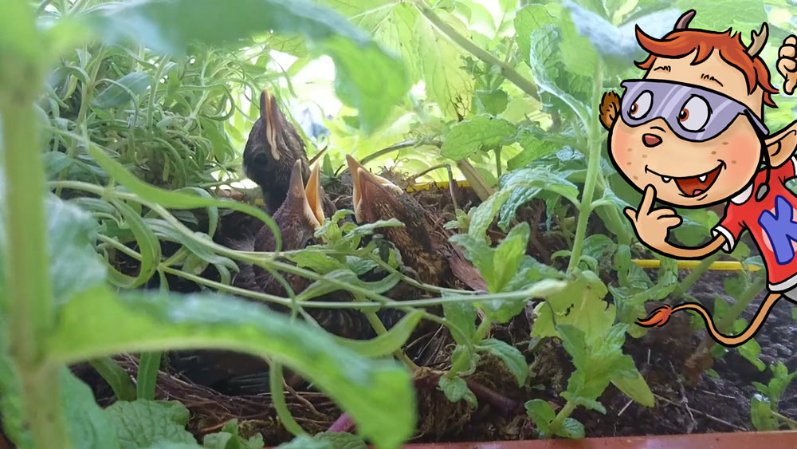
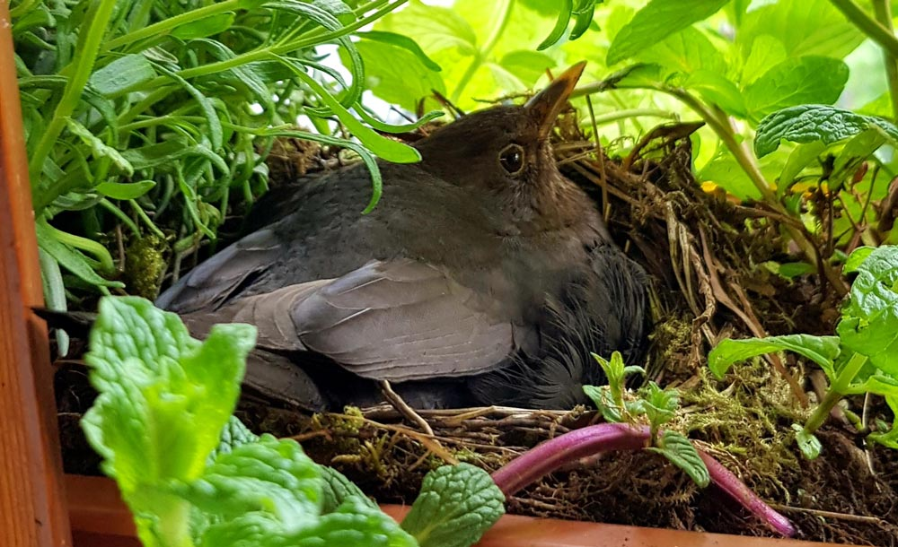
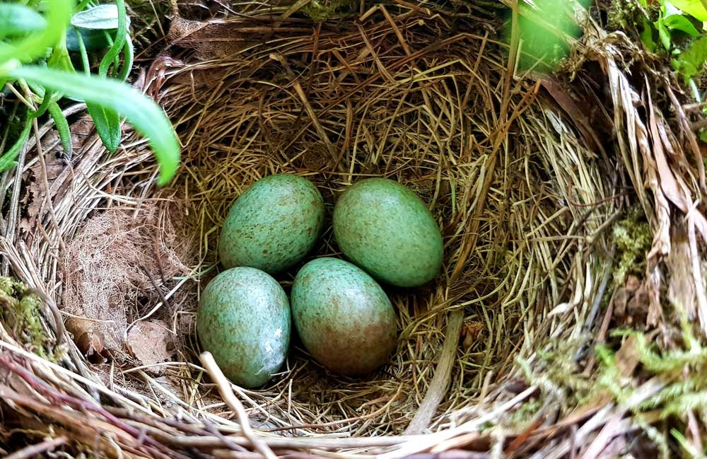
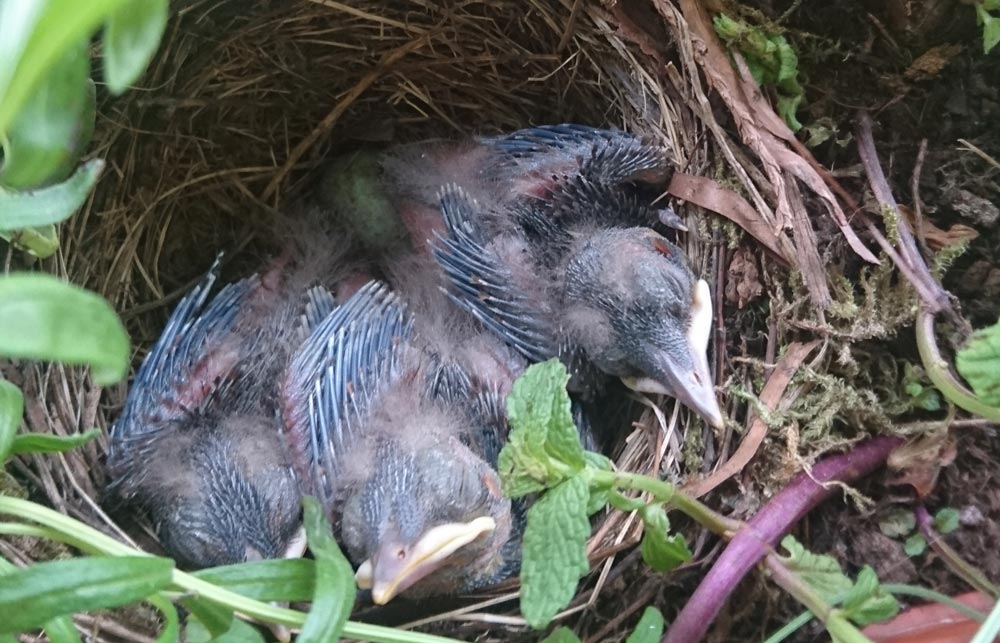

In unserer Kabu-Redaktion konnten wir eine interessante Beobachtung machen: Vor ein paar Wochen hat sich ein Amselpärchen ein Nest in einem unserer Blumenkästen gebaut und hat dort Junge ausgebrütet und aufgezogen. Wir haben eine Kamera aufgestellt, hier seht ihr einige Aufnahmen.
Videoclip:
Die Amsel, auch Turdus merula genannt, gehört zur Familie der Singvögel und Drosseln. Amseln sind Zugvögel. Das heißt sie fliegen während dem Winter in den Süden, um der Kälte zu entgehen. Amseln sind in Europa, Asien und Afrika heimisch. Ausgewachsene Amseln können 25 Zentimeter groß werden. Sie haben eine Flügelspannweite von fast 40 Zentimeter und wiegen im Durchschnitt bis zu 110 Gramm.

Am liebsten bauen Amseln ihre Nester in Hecken, Sträuchern und Bäumen. Bei uns haben sie sich in einem Blumenkasten am Bürofenster niedergelassen. Amseln haben einen Trick um sich vor natürlichen Feinden wie Eichhörnchen oder anderen Vögeln zu schützen: Sie bauen jedes Mal ein neues Nest wenn sie brüten und bleiben somit nie lange an einem Ort.

Amseln brüten zwischen März und Juli drei bis vier Mal im Jahr. Sie legen dabei zwischen drei und sechs bläulich-grüne Eier. Diese Eier werden anschließend 14 Tage lang von der Amselmutter ausgebrütet. Nachdem die Jungvögel geschlüpft sind, verbringen sie zwei weitere Wochen im Nest. Dort werden sie von ihren Eltern versorgt und beschützt. Am liebsten essen die kleinen Nesthocker Würmer, Insekten und Larven, aber auch Beeren.

14 Tage, nachdem die Amseljungen geschlüpft sind, werden sie flügge. Das heißt, dass sie weit genug entwickelt sind, um das Fliegen lernen zu können. Innerhalb dieser Zeit haben die Jungvögel stark an Größe und Gewicht gewonnen und können nun mit ihren Eltern weiterziehen.
So schnell, wie sich das Amselpärchen in unserem Blumenkasten eingenistet hat, so schnell war es mitsamt den drei Jungvögeln auch wieder weg. Aber wir haben zum Glück einige tolle Aufnahmen davon.
Amseln sind einfach sehr niedliche Tiere und wir haben sie in kurzer Zeit in unser Herz geschlossen.
💭 Sprechblase Amseln sind einfach sehr niedliche Tiere und wir haben sie in kurzer Zeit in unser Herz geschlossen.